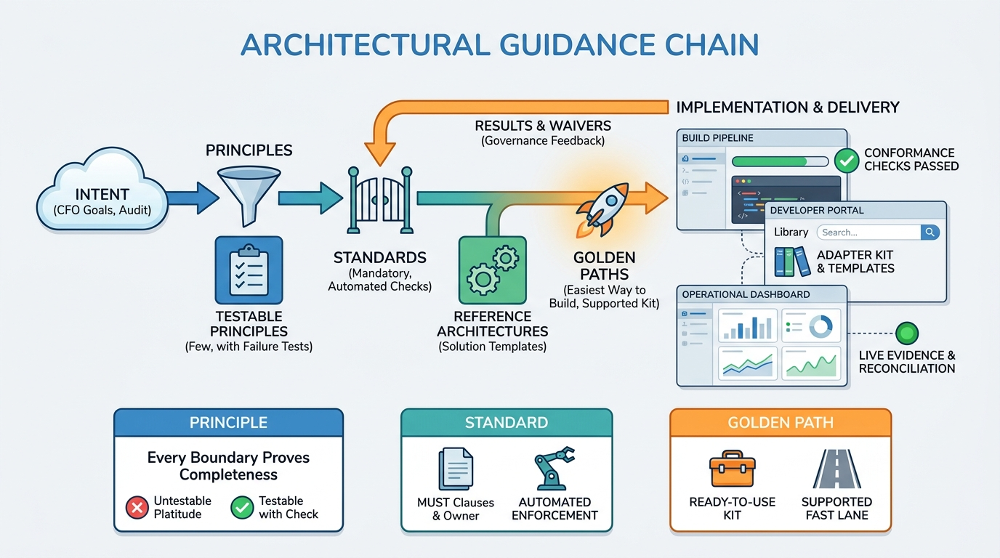

Part IV — LEADERSHIP: The Chief Architect's Agenda
Principles That Decide Things

Image generated by Google Gemini (gemini-3-pro-image-preview)
Part IV — LEADERSHIP: The Chief Architect's Agenda

Image generated by Google Gemini (gemini-3-pro-image-preview)